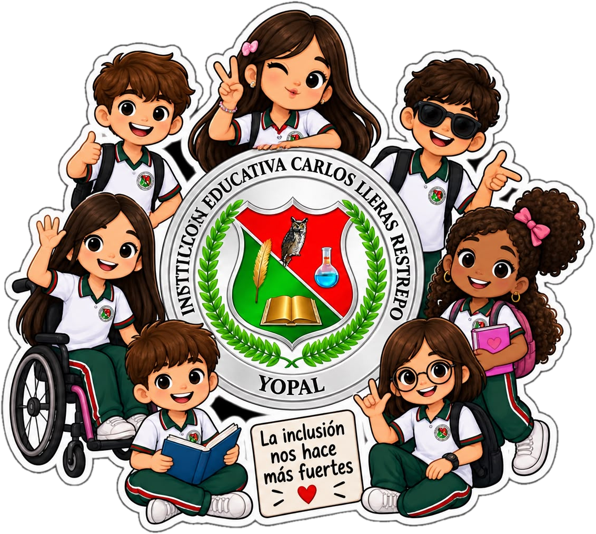

¡Hola! 👋

Soy Bit, tu guía. Aquí vas a aprender los temas de Grado Décimo y Grado Once jugando, escuchando y viendo — a tu ritmo, como tú aprendes mejor.

Números y Datos, Algoritmos y Programación, Arquitectura y Mantenimiento, Sistemas Operativos.
Arduino y Robótica, Redes de Datos I y II, Páginas Web.
Cada tema tiene su propia evaluación, con preguntas que también puedes escuchar.